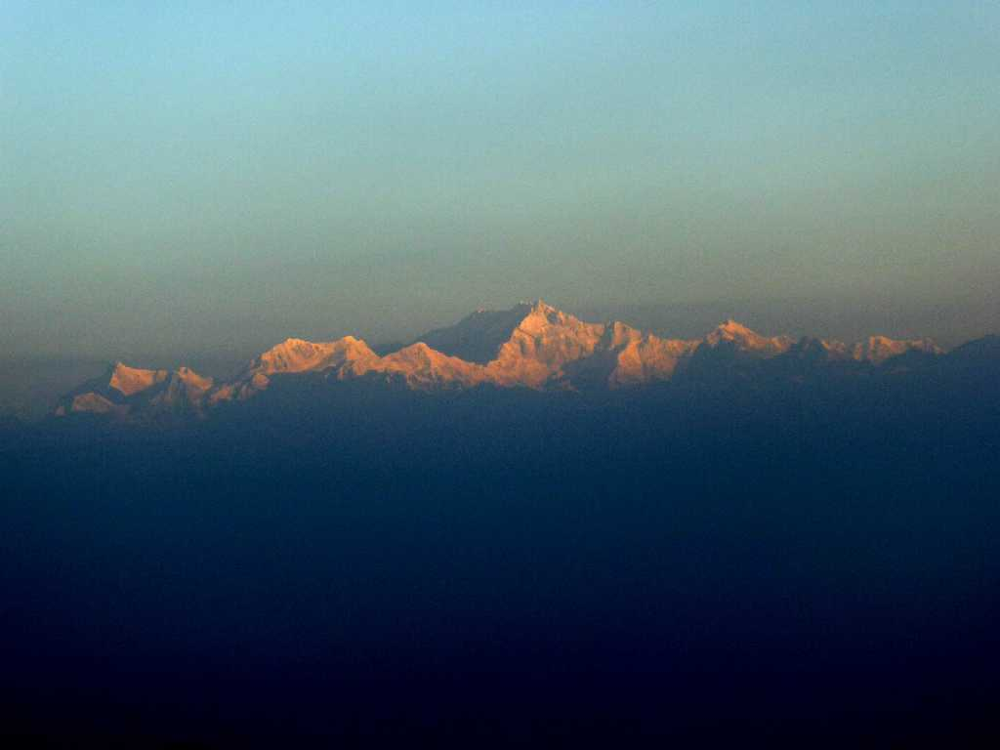
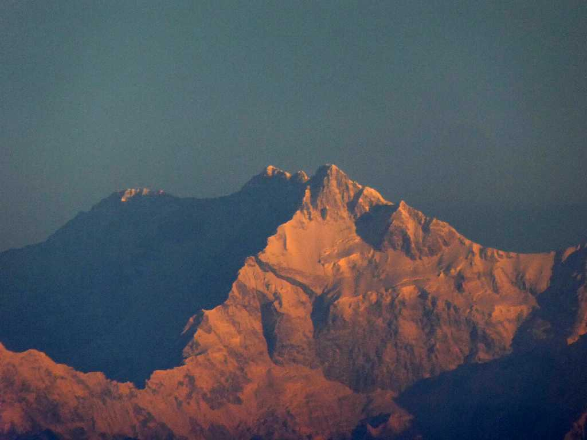
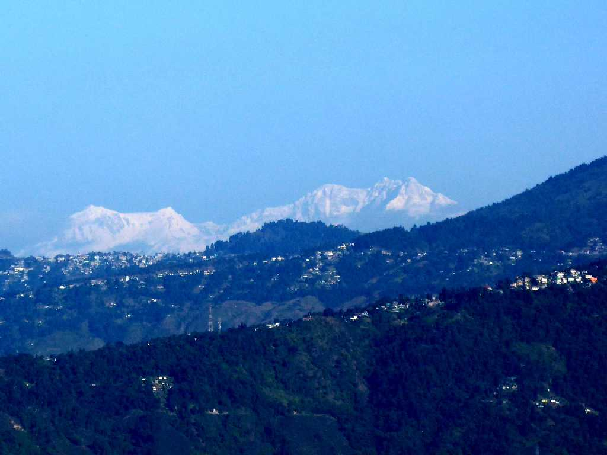
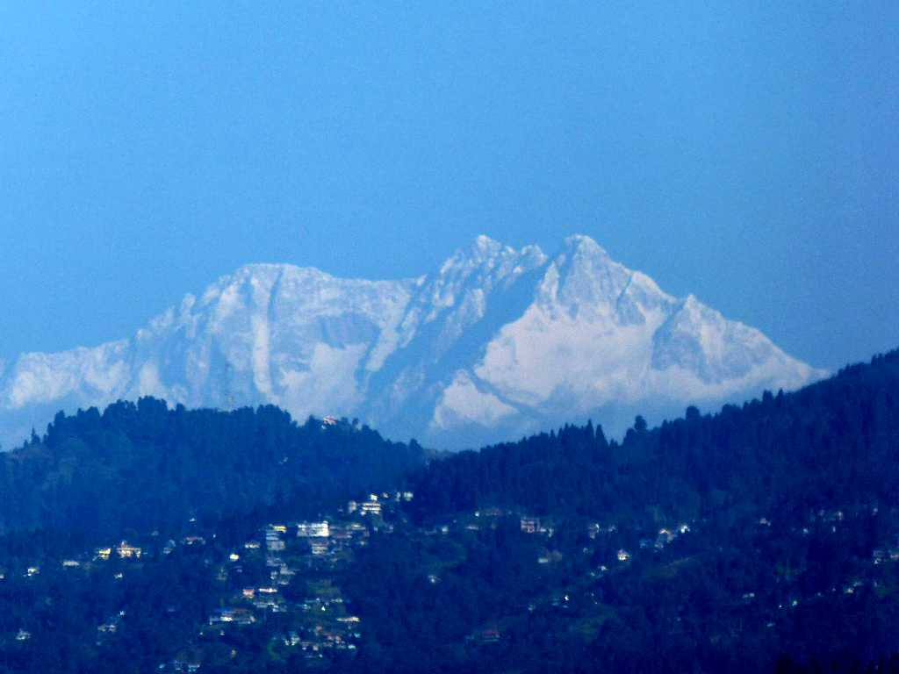

November 28 2017 6:15 Mt. Kanchenjunga from Gangtok Sikkim
世界第三番目高峰 ８,５８６ｍ カンチェンジュンガ山 インドとネパールとの国境に位置する 初登頂１９５５年５月２５日イギリス隊

Summit Mt. Kanchenjunga from Gangtok
シッキム王国の首都であった標高１,７８０ｍにあるガントクから朝日を受けて輝くカンチェンジュンガの東面を望む

November 30 2017 6:20 Mt. Kanchenjunga from Tiger Hill Darjeeling
標高２,５９０ｍのタイガーヒルから右より朝日を受けるカンチェンジュンガの南面を望む

Summit Mt. Kanchenjunga from Tiger Hill
標高７,０００ｍ以上の山が１００座以上あるヒマラヤでは根雪の無い低い山はグリーンヒルと呼んでいる

December 1 2017 8:20 Mt. Kanchenjunga from Kurseong Darjeeling
標高１,５００ｍのクセオンから日中は根雪で白く輝くカンチェンジュンガを望む

Summit Mt. Kanchenjunga from Kurseong